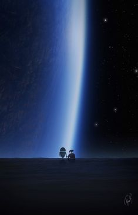
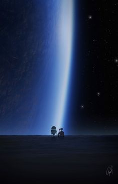
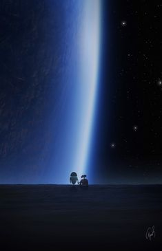

Em um mundo que enfrenta uma crise ambiental global e crescentes preocupações sobre a pegada tecnológica, "Wall-E" emerge como um lembrete contundente de como a sociedade atual pode enfrentar um destino sombrio se não mudar o curso atual. A animação da Pixar destaca a urgência de agir contra os perigos iminentes da acumulação de resíduos e a alienação tecnológica.
A trama se desenrola em um futuro distante, onde a Terra se tornou uma esfera coberta por detritos e poluição. O robô Wall-E é o último remanescente de uma civilização outrora florescente, deixado para limpar o planeta sobrecarregado por resíduos. A história toma um rumo alarmante quando Wall-E encontra EVE, uma sonda robótica, e desencadeia uma série de eventos que questionam a relação entre humanos, tecnologia e ambiente.

"Wall-E" pinta um retrato sombrio de um futuro onde a proliferação de resíduos e a dependência cega da tecnologia resultam em uma catástrofe ambiental. A humanidade é forçada a abandonar a Terra devastada e a viver em uma espaçonave, enquanto o planeta natal é deixado em um estado de desolação ecológica.
O subtexto inquietante da animação reflete as apreensões contemporâneas sobre o esgotamento de recursos naturais e a degradação do meio ambiente. À medida que a poluição e o excesso de lixo se tornam realidades globais, "Wall-E" atua como um aviso sobre os perigos de não agir prontamente para reverter a trajetória atual.
A animação transcende sua forma para se tornar um chamado urgente à reflexão e à ação. Em um momento em que as questões ambientais e a dependência tecnológica afetam o presente e o futuro da humanidade, "Wall-E" serve como um lembrete crucial de que a mudança é imperativa para evitar o colapso ambiental e a perda de contato com a realidade.
“EU NÃO QUERO SOBREVIVER. EU QUERO VIVER!"